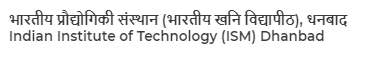

CyberLabs is an initiative by students of IIT(ISM) on the footsteps of MIT MediaLabs to learn vital concepts of engineering by working on real time projects and it aims to foster innovation through practical implementations of basic concepts. It helps one discover opportunities in numerous fields of computing and instil life-hacks of the computer world by collective collaboration of the members ,seniors and facilitators.Recently 6 of the club members have been selected for GSOC 19.
Year Of Formation : 2014
The Robotics club is a student run organization/club which officially comes under Cyber Security of IIT(ISM). The president of this club is DR.Sachin Tripathi(Associate Prof. Department of Computer Science and Engineering).The robotics Club is a cmmunity of students who find pleasure in creating mechanical peers that may even be potent to work without human intervention.

The Photography Club Of IIT (ISM) Dhanbad is a group of young enthusiastic photographers where capturing pictures isn't just a hobby .It's a medium to express who you are and how you see the world . People at PhotoFreaks bring out that little hidden photographer in you and help it shine .They are the ones who capture the most astonishing moments of the campus life .A number of photowalks, an annual national level exhibition (PhotoMela) and various other activities in collaboration with other clubs, are organised.
Year Of Formation : 2014
SAC Room Number : 205 , 206
Legends In The Making is the official stage dance club of IIT (ISM) .The members learn different dance styles like breaking, locking, poping, whacking, etc. from senior members, as well as guest dancers invited to various workshops.
Year Of Formation : 2011

If there is an actor inside you, the stage of Abhay Dramatics Club provides an excellent platform to follow your passion. One of the most reputed clubs of our college. ADC gives opportunities to perform in front of audiences heavy in both intellectual and number. It's a place where you can take all your skills under the guidance of some excellent artists.
Year Of Formation : 2009
Have you ever dreamt of making your own film? If yes, then Lights Camera Action ISM is the official filmography club of IIT (ISM) Dhanbad, where you can explore your creativity and skills. The club also gives the opportunity to explore your passion in acting as well music, videos, to stories, social experiment to college function - LCI does it all. So be a part of LCI and learn the art of film making from the best!
Year Of Formation : 2016


Manthan is the official music club of IIT (ISM) Dhanbad, aiming to provide a platform and launching pad to the musical talent of our college. It thrives to develop a sense of music among all the members. Alive, Acoustic Session, The Last Stage and many more events, in collaboration with other clubs, are organised annually by the club.
Year Of Formation : 2012
"WE THE CREW" the official street dance crew of IIT (ISM) Dhanbad was established on 2nd December 2014. The crew looks to rock the streets and stages with different styles, like hiphop, funk and break dance. Last year they had bagged the 6th position in Spring Fest and came 3rd in Spring Fest 2019 .
Year Of Formation : 2012

If you have a things for book and literature.LITC welcomes you with great heart.The literary and debate club of your college.LITC providesa common platform for leaders,writers,speakers ,poets,bloggers,journalist and debators to nurture their skills and present them to the mass.Their activities include discussions,debates,elocution,story writing,and promotion of literature in diverse forms.
Year Of Formation : 2010
Want to bring out that little hidden artist in you?If yes,then this is the perfect place for you.Artfreaks is a creative club of IIT(ISM)where the senior members guide you to pursue and flourish different forms of art and craft through various workshops.The contribution of club in the fests organized annually in college is huge as the members work selflessly to give the campus a completely new look.
Year Of Formation : 2015
Kartavya is a non-profit voluntary organisation run by the students of IIT(ISM).It is mainly working for the education of poor and underprivileged children in slums and villages,and helps their families for better living through various projects.Kartavya has a total of 11 chapters across india.kartavya is providing education to 1500 children across the country along with the employment of 100+ through recruitment.
Year Of Formation : 1999
The astronomy club of IIT(ISM) is a paradise for all who have ever looked at the night sky with several lingering questions.Awe at its magnificence and stuck with its mysteries,ARKA aims to inculcate the passion for astronomy in the students.
Year Of Formation : 2017
Ever wondered how simple stuffs like suspension,radiators,engines and brakes build up racing cars that manage to set tracks on fire?So don't be just amenable to different revolutions in the history of car mechanics,but be a part of this amazing journey to designand create your own automobile with MECHISMU,the official Formula Racing Team of IIT(ISM)Dhanbad because we believe racing is religion.
Year Of Formation : 2008